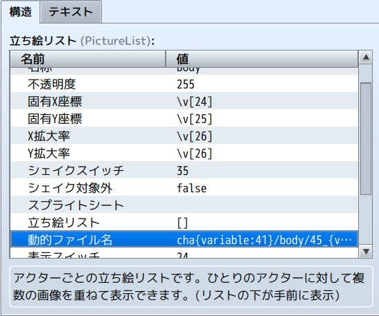
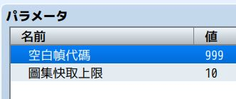
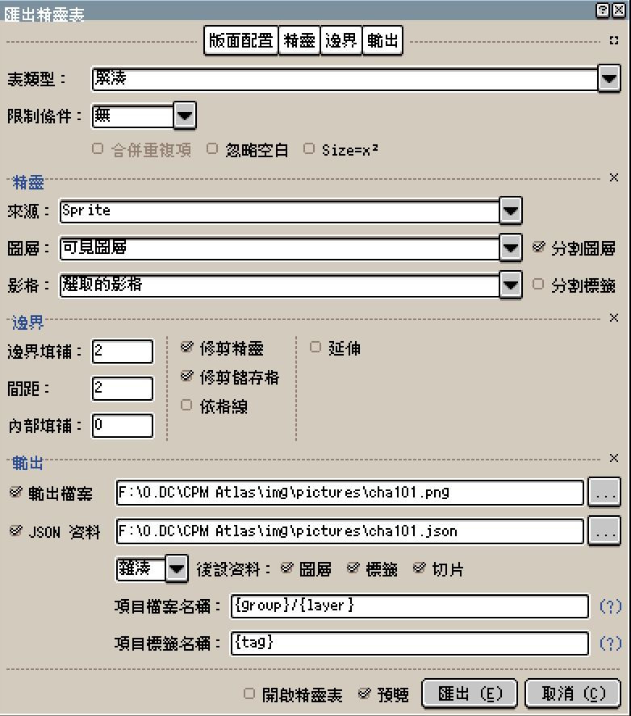

cha10a、cha10b...）、水平鏡像翻轉自動座標還原、狀態機非同步防閃斷切換，以及圖層獨立晃動與逐幀動畫。CPM 的路徑是絕對的，Atlas 系統依附其上運作。核心規則為動態檔名映射：

cha{variable:41}：對應 Atlas 檔案名稱（例：變數 41 為 1，檔名即為 cha1.png；若拆分為多紋理則自動聚合 cha1a、cha1b...）。body：Atlas 的子資料夾圖層名稱，可依繪圖分組彈性更改動態路徑。45_{variable:45}：對應 Atlas 最終繪製的圖層內容。hair 資料夾，純以 1.png 命名容易撞名混淆。透過「變數編號 = 固定圖層」命名（例如前髮 45_1.png、後髮 46_1.png），即使不分類也能確保全域名稱唯一。

BlankFrameCode，預設 999）：999 或 -1 或 999,-1）；為避免與常規差分編號衝突，禁止設定為 0 與 1。
AtlasAnchorMode）：topleft（預設）：畫布左上角對齊目標座標（X, Y），鏡像翻轉時以畫布原點原地翻轉。cpm：模擬 CPM 原生 Origin 基準點，在相同畫布尺寸下可使 Atlas 與散裝圖片座標完全一致。（註：由於兩者應用定位不同，刻意放大散裝圖片畫布反而會造成效能負優化，建議兩者仍依各自規格定位初始座標。）
DC_CPMpreload）：cha10a、cha10b、cha10c...，CPM 端維持填寫 cha10/部件路徑 即可。事件演出前呼叫 this.DC_CPMpreload("cha10"); 會阻塞等待所有關聯紋理載入完畢（ready），確保切換時序不搶拍。
MirrorSwitch / SceneMirrorSwitch），以 JSON 的 sourceSize 整張畫布為基準動態計算 pivot，無需任何手動座標補正數值。
突破原生單一演員僅能全體晃動的限制，支援透過 CPM 圖層設定的 name 指定單一或多個圖層獨立晃動：
DC_CPMshake('npc,npchair', 6, 8, 30, 90);（參數依序為：圖層名稱或演員 ID、強度、速度、時間幀數、角度）。
提供兩種變數序列驅動模式：
1. 事件阻塞式：this.DC_CPMframe(51, [5, 6, 7], 20, 3, false);（循環結束前暫停事件往下執行）。
2. 全域背景常駐循環：DC_CPMframeloop(51, [5, 6, 7], 20, 'pp', 10, 5);（支援 'fw' 順播與 'pp' 乒乓模式，可指定循環次數與結束停留值，或透過 DC_CPMframestop(51, 5) 手動停止）。
透過腳本呼叫 DC_CPMmove("24:=200, 25:-50", 60); 讓指定座標變數在設定幀數內平滑過渡位移（支援 = 絕對定位與 +/- 相對位移）。
提供簡潔的批次腳本指令：DCsw(1, -3)（正數 ON、負數 OFF）、DCvar({ 15: 1, 16: "v17", 18: [1, 2, 3] })（支援固定值、變數指標代入與隨機池抽取）、this.DCssw("A", "-B")（獨立開關）以及 DCfill(0, 10, 11, 12)（批次填充）。
請參考範例專案內的 Aseprite 範本，輸出精靈表時請遵循以下參數設定：

2 - 4 像素，提供安全緩衝避免在非整數縮放時產生邊緣像素污染。{group}/{layer}，這決定了輸出的 JSON 自動寫入的路徑與層級，必須與 CPM 動態檔名對齊。Hash（物件鍵值對），並確保未勾選旋轉切片（Rotate）。